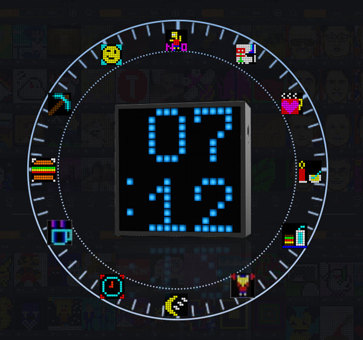
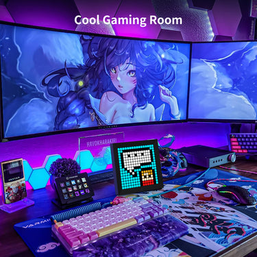

Divoom 像素音箱上手几天：那块会跟着音乐跳动的小屏幕把我拿捏了
从开箱配对踩双路蓝牙的坑，到 Music Visualizer 随节奏律动的惊艳体验，聊聊这块 LED 像素屏到底值不值得摆上桌面
说实话，我之前对 Divoom 这种"像素音箱"是有点不以为然的——一块 LED 点阵屏加个蓝牙喇叭，不就是个会闪的桌面摆件吗？直到某天收拾工位的时候发现桌面确实空得慌，又刚好刷到一段 Timebox-Evo 跟着电音节奏跳动的视频，去官网上看了下介绍，鬼使神差就下单了。
开箱第一眼：比想象中小，也比想象中沉
拿到手的第一感觉是方方正正一块黑砖，比我预想的要小巧，但掂起来分量不轻——6W 的 DSP 喇叭加内置电池，扎实。正面那块 16×16 的 LED 点阵屏在关机时完全隐形，开机瞬间亮起默认时钟面，那种"整块黑突然被点亮"的仪式感确实有点东西。
包装盒里东西很简单：音箱本体、一根 USB-C 充电线、一张快速入门卡。快速入门卡上画的示意图我没仔细看，后果是——
配对踩的第一个坑：只配了一路蓝牙
这是我最想吐槽也最想给新手提个醒的地方：Divoom 的蓝牙音箱要配对两次。
第一次是在手机系统设置里，连那个不带 "Light" 后缀的名字（比如 "Timebox-Evo Speaker"），这是音频通道——配对成功后音乐能从音箱放出来。我当时做到这一步就以为搞定了，打开从官方下载的 Divoom APP 想推个像素画上去，结果 APP 死活搜不到设备。
折腾了快半小时才反应过来，后来翻Divoom文档才确认：还有第二次配对要在 APP 里完成，扫描那个带 "Light" 后缀的屏幕通道。两个通道分开的好处是音频带宽不会被屏幕数据挤占，音乐延迟更低；但坏处就是新手几乎必踩这个坑——谁能想到一个音箱要配两次蓝牙啊。

最惊艳的功能：Music Visualizer 随节奏跳动
两个通道都配好之后，我打开网易云放了一首电子乐，音箱前面的像素屏自动切换成了 Music Visualizer——那一刻我明白为什么有人会为这块屏幕买单了。
不是那种粗糙的频谱条，是真正跟着节奏律动的像素动画：重低音下来时屏幕中央炸开一团光，高音扫过时周围有细碎的像素点飞溅，中间还有一道波浪纹在起伏。蓝牙 5.0 的延迟控制得不错，我盯着屏幕和耳机里的音乐对比了几次，基本感觉不到差拍。
这个功能完全是自动的，不用在 APP 里额外设置——你播音乐，它就跳；你停了，它就回到时钟面或你设定的 Widget。DSP 调校的音质也比同价位廉价蓝牙音箱好不少，低音有厚度、中频不发闷，虽然和 JBL Charge 这种专业便携箱比还有差距，但考虑到它同时还是一个能显示像素艺术的桌面装饰，这个音质已经是加分项了。
不止能跳：Widget、闹钟、番茄钟都在这块屏上
Music Visualizer 是它最抓眼球的功能，但用了几天我发现更多时间其实是在看它的Widget。
我给 Pixoo-64 设了股票行情面板，上班时抬头就能瞟一眼持仓涨跌；Tiivoo-2 放在床头当闹钟，起床画面是我在社区收藏的一个小太阳慢慢升起的动画，比手机闹钟的单调铃声温柔多了。还有番茄钟——工作时屏幕显示倒计时，到点自动跳成一个举杯庆祝的像素画，仪式感拉满。
一个 Divoom 账号能管理多台设备，每台的 Widget 和闹钟设置都是独立的。我现在书桌一台 Pixoo-64 盯股票，床头一台 Tiivoo-2 当闹钟，两台互不干扰但又共享收藏夹——在社区刷到好看的起床表情，收藏后两台设备都能推上去。这块屏幕能显示的东西真的比我预想的多太多。

用了一周，说几个真实的别扭
说了好的也说点不好的，毕竟上手测评不能只吹。
第一，蓝牙音箱没有防水。Divoom 产品大多没做 IPX 认证，放在桌面还好，但如果你想带去户外露营或洗澡时放浴室，得自己注意别淋到水。
第二，蓝牙延迟在某些场景下还是会冒出来。比如你在 APP 里推送像素画的同时又在听歌，屏幕通道会占带宽，Music Visualizer 偶尔会慢半拍。官方说固件更新在优化这个问题，但我实际用下来感觉改善有限——听音乐时尽量别在 APP 里瞎操作就好。
第三，APP 扫描偶尔会卡。有几次我打开 APP 想找设备，扫描列表一直是空的，重启 APP 和手机蓝牙才恢复。这是蓝牙 5.0 老问题了，不是 Divoom 一家的事，但体验上确实有点烦。
适合谁，不适合谁
聊完体验给个结论。
适合：桌面党、数码爱好者、喜欢像素艺术的玩家、需要一点视觉点缀又不想买独立音箱加显示器的场景。它是"一台设备两种用法"的典型代表——想听音乐时是音箱，想看点什么时屏幕自动给你东西看。
不太适合：对音质有发烧级要求的、只需要一个纯蓝牙音箱的、或者预算卡得特别死的。毕竟 $50-$100 这个价位，纯音质的话 JBL 和 Anker 确实有更强的选择，Divoom 的核心价值还是那块屏幕。
结尾
一周用下来，那块会跟着音乐跳动的小屏幕确实把我拿捏了。说实话刚开始我是冲着"桌面装饰"买的，现在每天早上起来先看 Tiivoo-2 的闹钟动画，上班时瞟一眼 Pixoo-64 的股票面板，晚上写东西时 Timebox-Evo 就在旁边播着 Lo-Fi 配着像素波浪——它已经不是一个"玩具"，是我桌面生态里真的会用起来的东西。
如果你也在纠结桌面空着要不要放个东西，或者单纯好奇那块像素屏到底能玩出什么花样，可以去它的官网逛逛，社区里有大量用户投稿的像素画和动画，看完大概率会种草。安装包从官方下载就能拿到，新手上路遇到配对问题别慌，文档里有完整的排查流程——毕竟我踩过的坑，你们就别再踩一遍了。